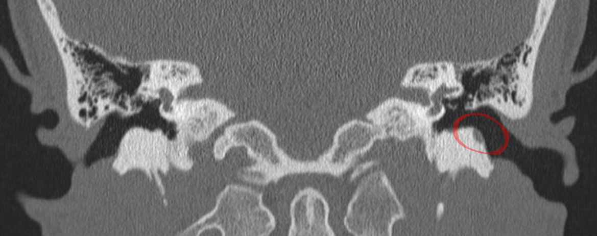

Ficha del catálogo
Colesteatoma adquirido
- Sistema
- Cabeza y cuello
- Modalidad
- TC
- Región
- Oído medio y mastoides
- Dificultad
- Avanzado
Es una acumulación de epitelio escamoso queratinizado dentro del oído medio que crece de forma expansiva y erosiona las estructuras vecinas. Se origina con mayor frecuencia a partir de una bolsa de retracción de la porción flácida de la membrana timpánica en pacientes con disfunción tubárica crónica. Cursa con otorrea fétida y pérdida auditiva progresiva de tipo conductivo.
Técnica
La tomografía de peñascos con cortes submilimétricos y reconstrucciones en los planos axial y coronal es el estudio de referencia porque define el hueso y la extensión de las erosiones. La resonancia con secuencias de difusión sin eco planar diferencia el colesteatoma del tejido de granulación y de las secreciones. La combinación de ambas técnicas es la práctica habitual antes y después de la cirugía.
Qué observar
- Masa de tejido blando no dependiente de la posición en el epitímpano lateral
- Erosión del espolón óseo o scutum en el plano coronal
- Desplazamiento medial y erosión de la cadena osicular, sobre todo del yunque
- Ampliación del receso epitimpánico y del aditus ad antrum
- Erosión del conducto semicircular lateral y del techo del tímpano
- Integridad o dehiscencia del conducto del nervio facial en su porción timpánica
Hallazgos
En tomografía se identifica una ocupación de tejido blando de bordes lisos y expansivos que remodela y erosiona el hueso, con ampliación del espacio que ocupa. La erosión del espolón óseo y la lisis del proceso largo del yunque son los signos más precoces y más constantes. En resonancia el contenido muestra restricción intensa de la difusión en secuencias sin eco planar y no realza tras contraste, salvo un fino borde periférico inflamatorio.
Perlas
La tomografía demuestra muy bien la erosión ósea, pero no distingue el colesteatoma de la granulación ni de las secreciones cuando la caja está totalmente ocupada. En esa situación y en el seguimiento posquirúrgico la difusión sin eco planar es la que aporta la respuesta, porque solo la queratina restringe de forma marcada.
Diagnóstico diferencial
- Tejido de granulación y otitis media crónica
- Ocupa la caja sin erosión expansiva, realza tras contraste y no restringe la difusión.
- Colesteatoma congénito
- Se sitúa medial a una membrana timpánica íntegra, sin antecedente de retracción ni de perforación.
- Granuloma de colesterol
- Es hiperintenso tanto en T1 como en T2 por su contenido hemorrágico y no restringe la difusión.
- Paraganglioma timpánico
- Es una masa hipervascular sobre el promontorio con realce intenso y acúfeno pulsátil.
Simuladores
- Secreciones espesas retenidas en un oído medio poco ventilado
- Bolsa de retracción simple sin componente de queratina acumulada
- Cambios posquirúrgicos con tejido cicatricial en la cavidad de mastoidectomía
Por modalidad
- TC
- Delimita la extensión ósea, las erosiones osiculares y las dehiscencias del laberinto y del techo timpánico.
- RM
- Distingue queratina de granulación mediante difusión sin eco planar y detecta complicaciones intracraneales.
Protocolo
Tomografía de peñascos sin contraste con espesor submilimétrico y reconstrucciones multiplanares en axial y coronal, con ventana ósea de alta resolución. La resonancia añade secuencias potenciadas en T1 y T2 de alta resolución y difusión sin eco planar, con estudio tras contraste cuando se sospecha complicación. El seguimiento posquirúrgico se apoya sobre todo en la difusión para detectar enfermedad residual o recidivante.
Clasificación
Se describe por localización y extensión, diferenciando la forma de la porción flácida, que ocupa el epitímpano lateral y erosiona el yunque, de la forma de la porción tensa, que se dirige al seno timpánico y al receso facial y suele infradiagnosticarse. El informe debe precisar la afectación del conducto semicircular lateral, del techo del tímpano y del conducto del nervio facial.
Errores frecuentes
- Confundir ocupación inflamatoria con colesteatoma por no valorar la erosión ósea
- No revisar de forma expresa el conducto semicircular lateral y el trayecto del nervio facial
- Prescindir de la difusión sin eco planar en el seguimiento posquirúrgico

colesteatoma oído medio erosión osicular peñasco difusión sin eco planar mastoides cabeza y cuello